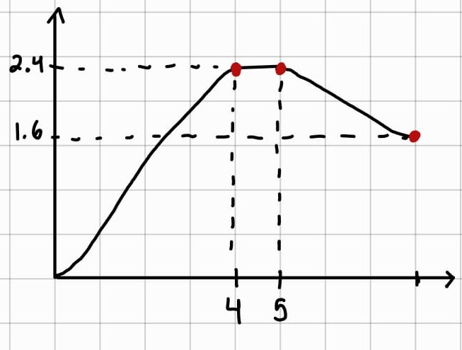

(HW4) Homework 4: Trajectory Planning
Exercise 1
This exercise gives a position graph \(q(t)\). The objective is to identify where the velocity is zero, where the velocity is maximum, and where the acceleration is positive or negative.
Mathematically, the solution is based on:
So:
- Velocity is the slope of the position graph
- Acceleration tells us how that slope changes

From the graph:
-
The velocity is zero where the position graph is flat. This happens approximately:
- From \(t=0 s\) to \(t=0.5\) s. Which is where point A is located.
- From \(t\approx 4.5 s\) to \(t\approx 5.5\) s. Which is where point E is located.
- From \(t\approx 7 s\) to \(t=8\) s. Which is where point F is located.
-
The maximum velocity occurs where the graph has the largest positive slope. This is around point C, in the steep rising segment. Around point F, the slope is negative, but it isn't as steep as at point C.
-
The acceleration is positive where the slope is increasing. This happens around point B, where the curve is concave upward. On the other hand, the acceleration is negative where the slope is decreasing. This happens around point D, where the curve bends and becomes flat.
Exercise 2
This exercise gives a trapezoidal velocity profile. The objective is to compute the total displacement from the area under the velocity curve.

The graph can be divided into:
- A left triangle
- A rectangle
- A right triangle
So:
Where:
Then:
Therefore, the total displacement is:
As a compact check, using the trapezoidal area formula:
Exercise 3
This exercise asks to determine whether the motion is trapezoidal or triangular.
The criterion is:
Otherwise, the motion is trapezoidal.
Case a
Given:
First compute the limit:
Compare:
Therefore, the motion is trapezoidal.
Case b
Given:
The limit is the same as case a, so:
Therefore, the motion is triangular.
Exercise 4
This exercise gives a velocity graph and asks to sketch the corresponding position graph \(q(t)\), assuming \(q(0)=0\).
The position is obtained by integrating velocity:

An approximate form of the curve may be obtained by integrating the velocity profile conceptually, leading to the graph shown below:

It can be described this way because, based on the velocity graph, we know that:
- From \(0\) to \(4\) s, the position increases
- From \(4\) to \(5\) s, the position remains constant
- From \(5\) to \(8\) s, the position decreases
The time coordinates on the x-axis can be estimated from the interval endpoints, while the corresponding position values on the y-axis can be approximated by computing the area under the described curve.
Exercise 5
A joint must move:
a) Determine whether the motion is trapezoidal or triangular
Use the condition:
Since:
the motion then is trapezoidal.
b) Compute \(t_a\), \(t_c\), and \(T\)
Acceleration time:
Cruise time:
Total time:
Therefore:
c) Write the velocity function \(\dot{q}(t)\)
The velocity profile is defined in three stages:
- A linear acceleration from rest up to the maximum velocity
- A constant-velocity interval
- A linear deceleration until the velocity returns to zero
Thus, the three phases are:
- Acceleration: \(0 \le t \le 0.25\)
- Constant velocity: \(0.25 \le t \le 2.0\)
- Deceleration: \(2.0 \le t \le 2.25\)
Substituting these values into the corresponding equations, the velocity profile is:
d) Write the position function \(q(t)\), assuming \(q_0=0\)
Integrating the velocity function in each interval gives the corresponding position function. Since \(q(0)=0\), the integration is performed phase by phase while preserving continuity between intervals.
Evaluating at \(t=0.25\):
For the second phase, the motion starts from \(q(0.25)=0.125\), therefore:
Evaluating at \(t=2.0\):
For the third phase, the motion starts from \(q(2.0)=1.875\), thus:
Therefore, the position profile is:
Exercise 6
A joint must move:
a) Design a triangular velocity profile
For a triangular profile, displacement is the area of the triangle:
Solving for the peak velocity:
Since the motion is symmetric, acceleration lasts half the total time:
Then the required acceleration is:
Therefore, for the triangular profile:
b) Design a trapezoidal velocity profile with \(t_a=0.5\) s
Since the profile is symmetric:
- acceleration time = \(0.5\) s
- deceleration time = \(0.5\) s
Then the constant velocity time is:
For a trapezoidal profile:
So:
Thus:
Now compute the acceleration:
Therefore, for the trapezoidal profile:
c) Compare the peak acceleration of both profiles
Triangular profile:
Trapezoidal profile:
Comparing both:
Therefore, the triangular profile requires a lower peak acceleration, which implies a lower torque demand and, consequently, a lower mechanical load on the motor. However, its main limitation lies in the direct transition between the acceleration and deceleration phases. Since there is no intermediate interval with zero acceleration, this change occurs more abruptly, which may produce a sharper dynamic response in the system.